CS 180 · Project 2
Fun with Filters & Frequencies
Theo Dela Cruz · Fall 2026
Part 1.1 · Convolutions from Scratch
I implemented zero-padded 2D convolution with a flipped kernel. The manual implementation follows the same boundary convention but is slower because it loops over every output pixel. convolve2d also has different boundary handling, as they have a symmetric and wrapround padding option. I only implemented the zero padding option. Convolve2d uses caching and other optimization techniques in order to make the repeated operations run much quicker, but the overall logic is exactly the same and in fact produces the same result.
My manual convolution
def manual_convolve(image, kernel, padding='same'):
h, w = image.shape
kh, kw = kernel.shape
pad_h, pad_w = kh // 2, kw // 2
if padding == 'full':
padded = np.zeros((h + 2 * kh - 1, w + 2 * kw - 1))
result = np.empty((h + kh - 1, w + kw - 1))
padded[kh-1:kh + h-1, kw-1:kw + w-1] = image
else:
padded = np.zeros((h + 2 * pad_h, w + 2 * pad_w))
result = np.empty((h, w))
padded[pad_h:pad_h + h, pad_w:pad_w + w] = image
kernel = np.flip(np.flip(kernel, axis=0), axis=1)
if padding == 'full':
for y in range(h + 2 * pad_h):
for x in range(w + 2 * pad_w):
result[y, x] = np.sum(padded[y:y+kh, x:x+kw] * kernel)
if padding == 'same':
for y in range(h):
for x in range(w):
result[y, x] = np.sum(padded[y:y+kh, x:x+kw] * kernel)
return resultFour-loop version (replaces np.sum)
for y in range(output_h):
for x in range(output_w):
total = 0
for kernel_y in range(kh):
for kernel_x in range(kw):
total += padded[y + kernel_y, x + kernel_x] * kernel[kernel_y, kernel_x]
result[y, x] = total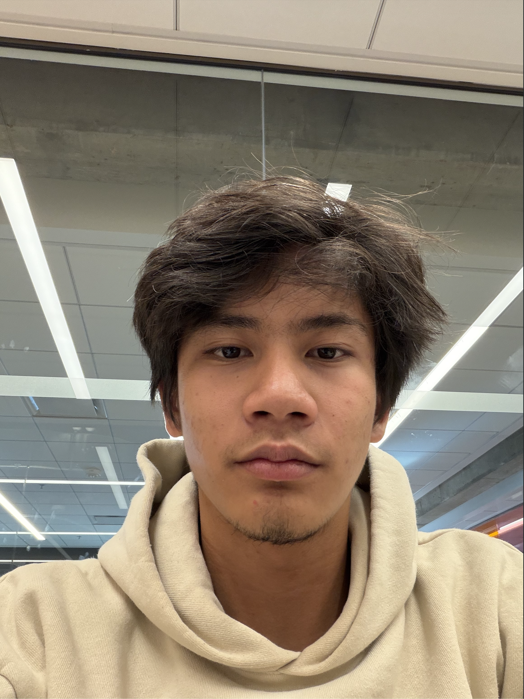
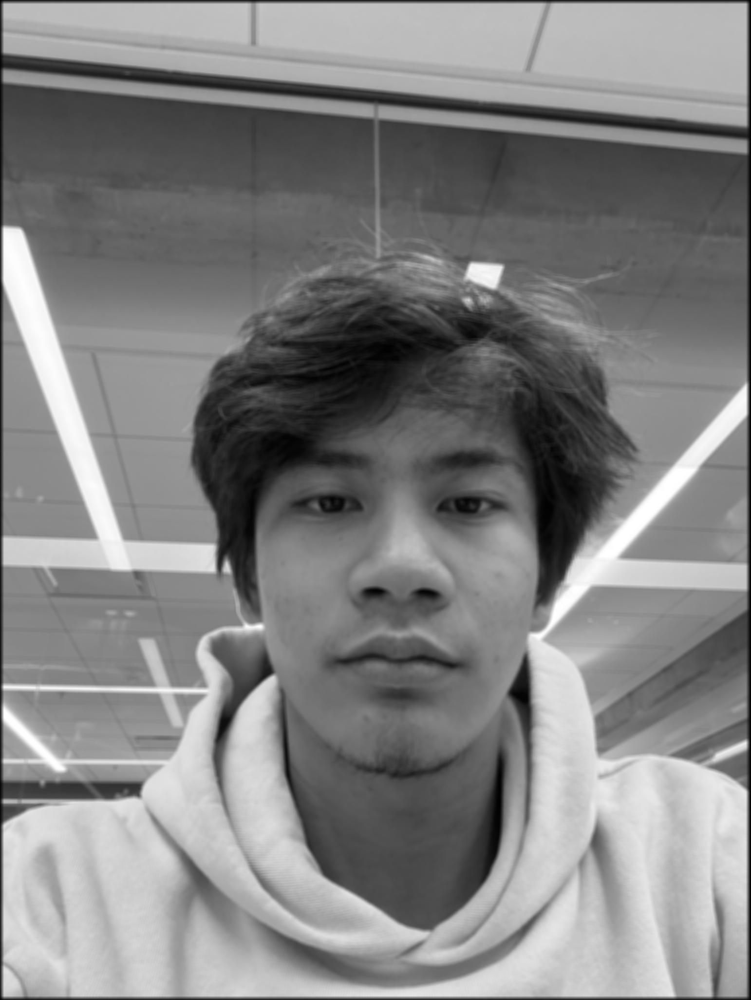
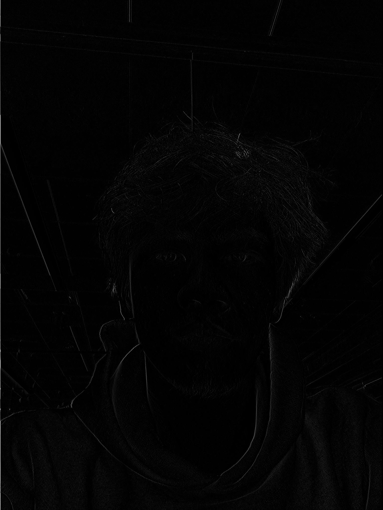
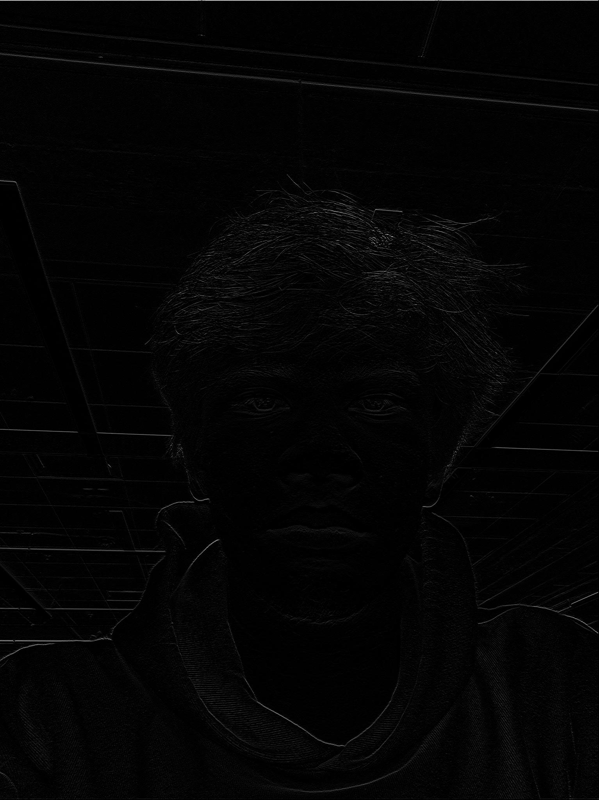
Part 1.2 · Finite Difference Operator
Dx and Dy measure intensity changes along the horizontal and vertical directions. Their gradient magnitude gives the edge strength, and thresholding produces the final edge map.
I used gradient_magnitude > 0.21, which suppresses weak texture responses while retaining the main object and tripod boundaries.
Anything lower, and the full shape of the cameraman + tripod would not be fully displayed. This is the minimum threshold that fully represents the entire
structure, but there is still a lot of noise, which are the masses of white specks in the background.

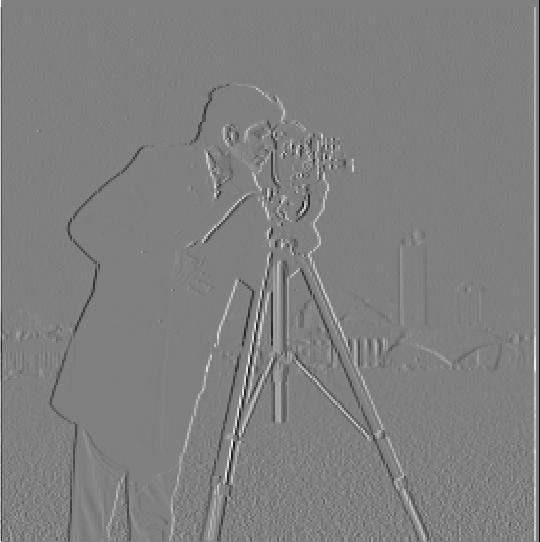

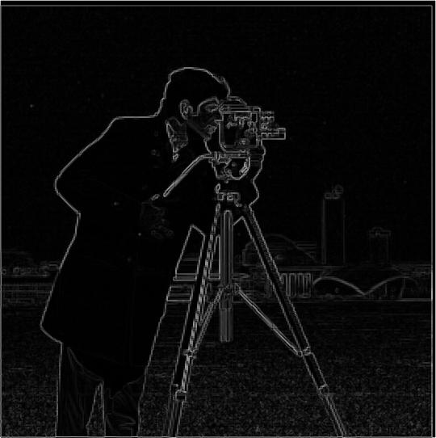
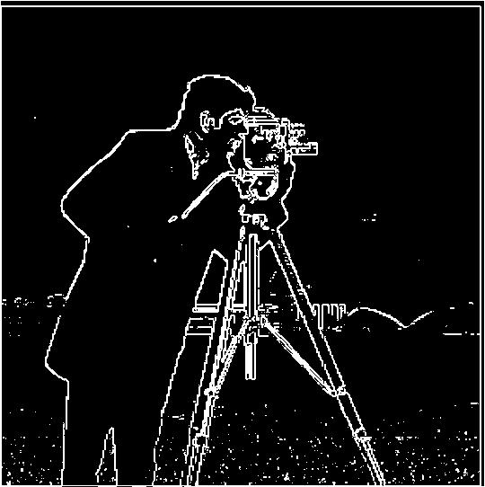
Part 1.3 · Derivative of Gaussian
Gaussian smoothing removes high-frequency noise before differentiation. I used a 9 × 9 Gaussian with σ = 1, then thresholded the blurred gradient at 0.2 and the one-convolution DoG result at 0.19. The derivative-of-Gaussian filters produce a cleaner edge map compared to the fdo, while preserving the major structure of the Cameraman image. Comparing the two edge maps, the DoG method reproduces the same major edges as blurring first and differentiating afterward. They are almost identical, with small differences from things like boundary handling.
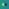
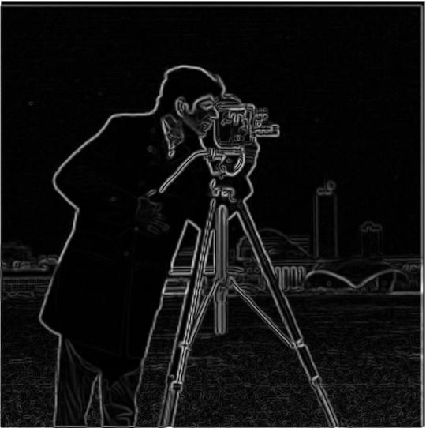
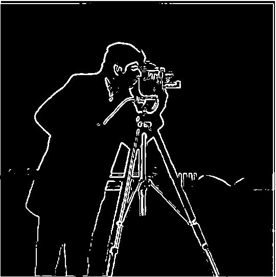
Part 2.1 · Image Sharpening
Unsharp masking adds a scaled high-frequency residual back to an image, strengthening its fine detail.
My implementation uses a 13 × 13 Gaussian with σ = 1, subtracts the blurred image to obtain the high-frequency residual,
then adds alpha * high to the original. The edges are improved to be sharpened, but details like people's faces
are not able to be restored. Only high frequencies present in the original image are able to be enhanced (like the
main edges of the taj mahal).

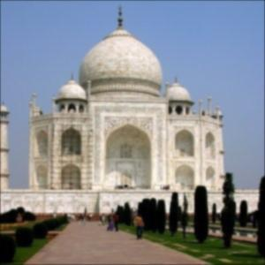
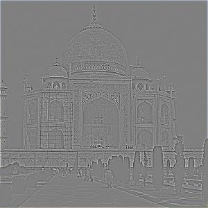

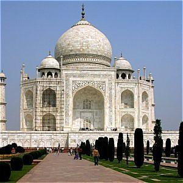
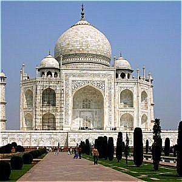
Soft-focus nature: sharpening comparison
I repeated the same unsharp-mask experiment on this already soft-focus image. The high-frequency residual shows which edges remain. This image is a little bit too blurred, so not many edges are able to be sharpened as a result. A potential work around for this to use a more forgiving high pass filter, so edges like the trees will also pass, allowing those features to be sharpened. However, this potentially introduces an increase in noise, so its a tradeoff to be made.
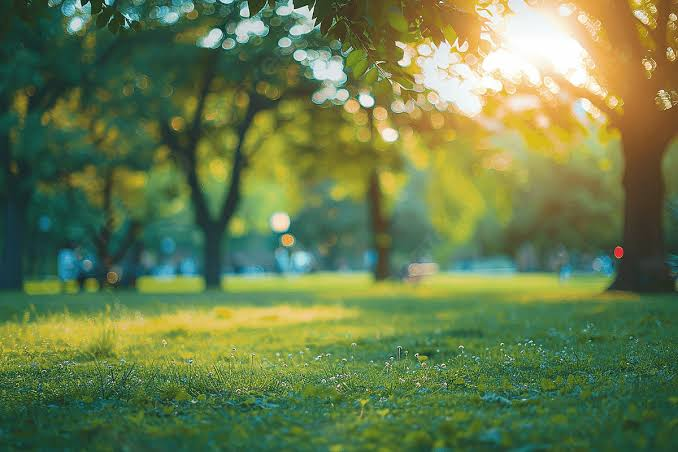
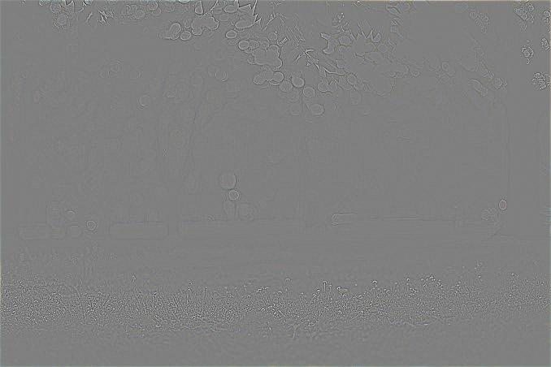
Sharp → blur → resharpen
This comparison uses a 25 × 25 Gaussian blur (σ = 3), between the earlier subtle blur and the stronger version, followed by an unsharp-mask recovery pass (α = 4). This shows that the unsharp mask is unable to restore all high frequencies of the image. Features such as the thick black lines in the bottom left are maintained through the filtering, so when they are enhanced, they are almost restored to normal. However, some of the smaller lines throughout the image, especially in the top area, blend together during the gaussian blurring. This results in those features not being recovered when redoing the unsharp mask.
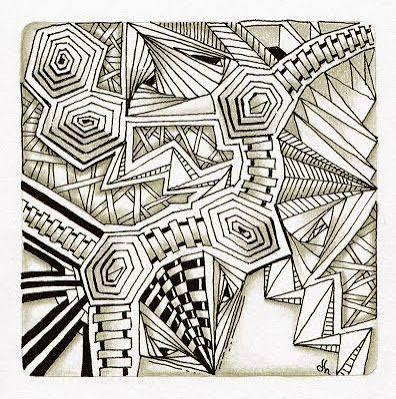
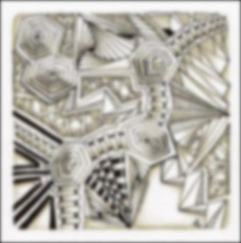
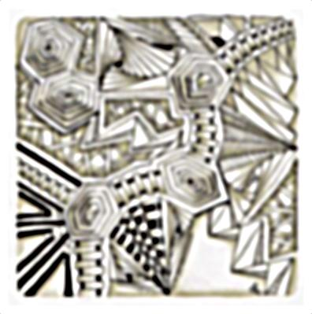
Part 2.2 · Hybrid Images
Hybrid images combine the high-frequency content of one aligned image with the low-frequency content of another. Frequency analysis is shown only for Human + Skull. For this pair, I use 59 × 59 Gaussian kernels with σhigh = 2 and σlow = 3, then average the high- and low-pass images. These results are weaker than the example shown on the website. I think this is due to using different parameters for the whole filtering process. You have to be closer to the image to see the high frequencies inputs, but they are still present.
Human + Skull: inputs, filtering, and frequency analysis
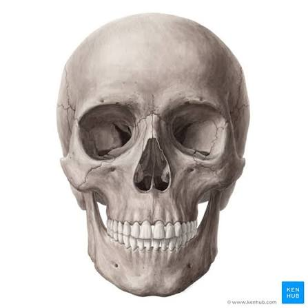
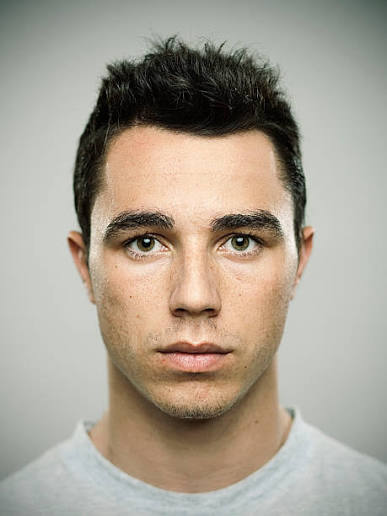
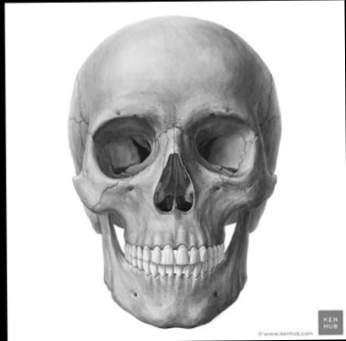
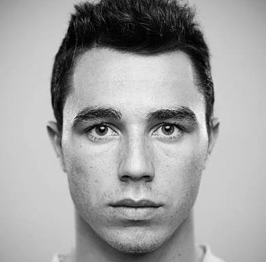
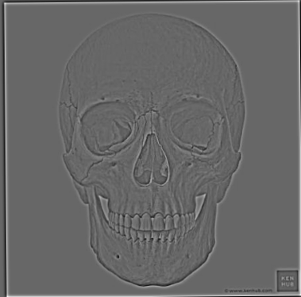
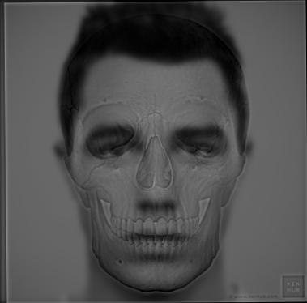
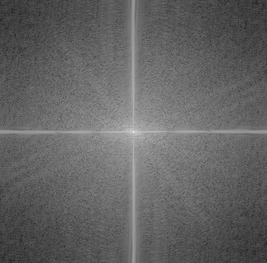
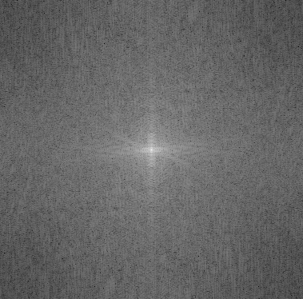
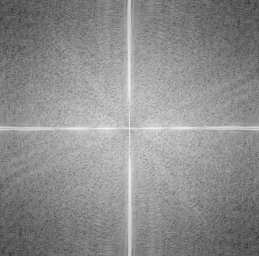
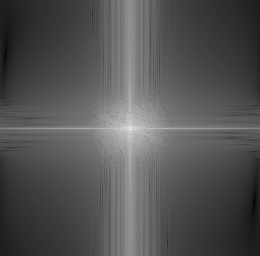
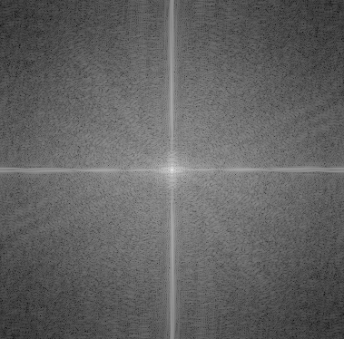
Derek + Nutmeg


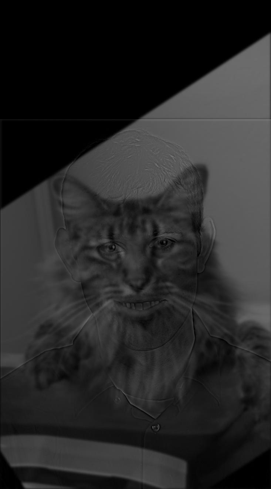
Orange + Basketball
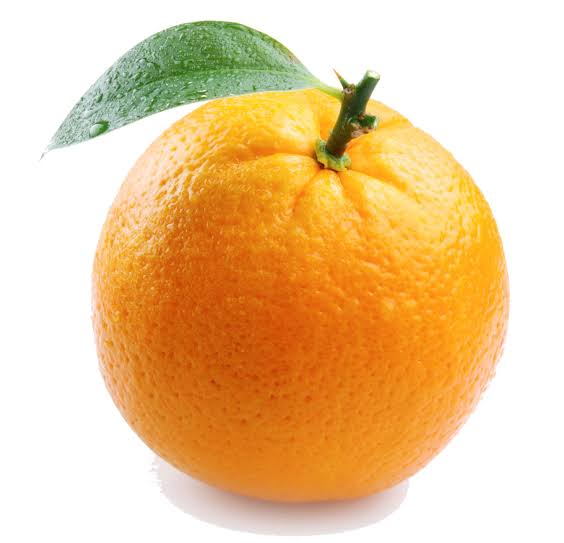
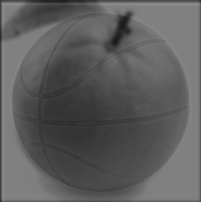
Part 2.3 · Gaussian and Laplacian Stacks
I generated eight levels for each stack with a 41 × 41 Gaussian (σ = 6), without downsampling. Each column shows one stack from level 0 at the top through level 7 at the bottom.
Apple Gaussian stack
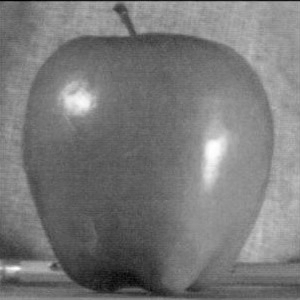
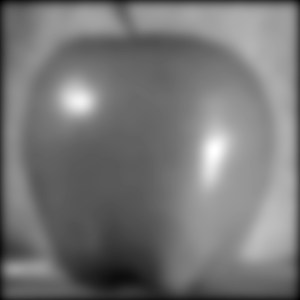
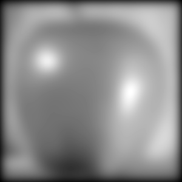
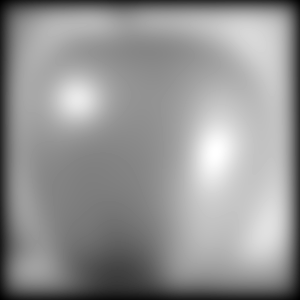
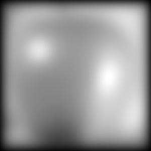
Orange Gaussian stack
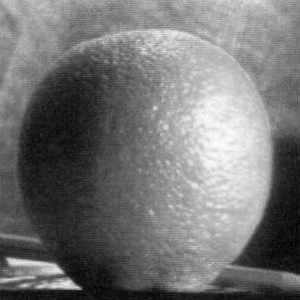
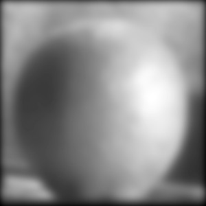
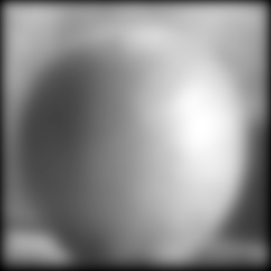
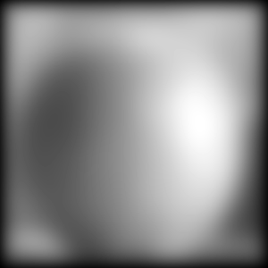
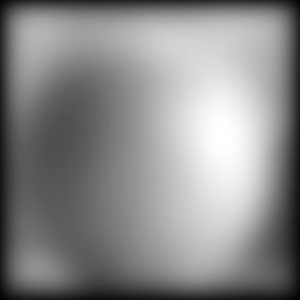
Apple Laplacian stack
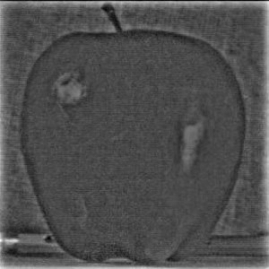
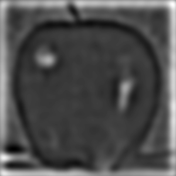
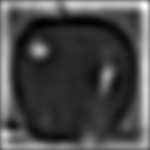
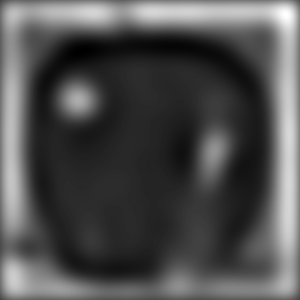
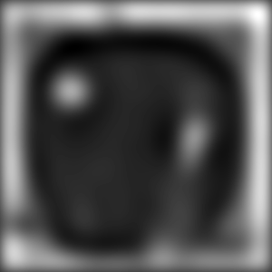

Orange Laplacian stack
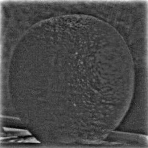
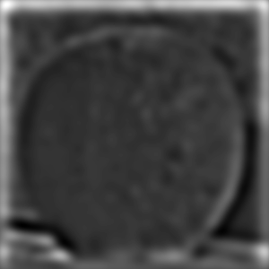

Vertical mask stacks
The binary step mask also has a Gaussian stack for blending and a Laplacian stack. Levels 0–6 show mask frequency bands; level 7 is the coarsest mask component.
Mask Gaussian stack
Mask Laplacian stack

Part 2.4 · Multiresolution Blending
The Oraple uses a binary vertical step mask and an eight-level Gaussian mask stack (41 × 41 Gaussian, σ = 6) to create a smooth transition at each frequency level. Iris + Sun and Cup + Tunnel use circular masks, with 16 stack levels each for broader transitions across frequencies.
| Apple contribution | Orange contribution | Blended result |
|---|---|---|
|
(a) |
(b) |
(c) |
|
(d) |
(e) |
(f) |
|
(g) |
(h) |
(i) |
|
(j) |
(k) |
(l) |
Iris + Sun
A circular mask centered on the pupil selects the pupil and the deep orange inner iris in the original photo while leaving most of the paler outer iris out. I use 16 stack levels; the coarsest two mix 25% of the Sun's illumination through the selected area. This was supposed to allow for better blending, although there is still a large contrast where the two images meet. I think this may due to the difference in brightness between the two images (go figure, the sun is bright!). The magnitude difference means that even with the band of blending color, the difference is not masked well.

Combined stack visualization
| Iris contribution | Sun contribution | Blended result |
|---|---|---|
 (a) | (b) |  (c) |
(d) |  (e) |  (f) |
 (g) | (h) |  (i) |
(j) | (k) |  (l) |
Mask and band blending · every other level
For each level, the displayed mask weight multiplies that level's iris Laplacian band; its complement multiplies the Sun band. Those two masked bands are then added. The final levels include the 25% Sun-light adjustment.
| Mask weight | Masked iris band | Masked Sun band | Blended level |
|---|---|---|---|
Level 0 |  | ||
Level 2 | |||
Level 4 |  | ||
Level 6 | |||
Level 8 |  | ||
Level 10 | |||
Level 12 | |||
Level 14 |
Cup + Tunnel
I scale and align the coffee surface with the tunnel opening, isolating it from the red tabletop and porcelain rim. I convert both images to grayscale before blending. A broad circular blend mask fades the edge through 16 stack levels, and the coarsest two mix 25% of the tunnel's light into the coffee. This result is also a bit weak, I think due to some misalignment that I can't fix, in addition to the brightness difference between the two images.
Combined stack visualization
| Cup contribution | Tunnel contribution | Blended result |
|---|---|---|
(a) | (b) |  (c) |
(d) |  (e) |  (f) |
 (g) | (h) |  (i) |
(j) | (k) |  (l) |
Mask and band blending · every other level
At each displayed level, the Gaussian-stack mask weights the coffee Laplacian band, while its complement weights the tunnel band. Adding the two masked bands gives the blended level; the coarsest levels also include the 25% tunnel-light adjustment.
| Mask weight | Masked coffee band | Masked tunnel band | Blended level |
|---|---|---|---|
 Level 0 |  |  | |
Level 2 | |||
Level 4 |  | ||
Level 6 | |||
Level 8 |  | ||
Level 10 | |||
Level 12 | |||
Level 14 |